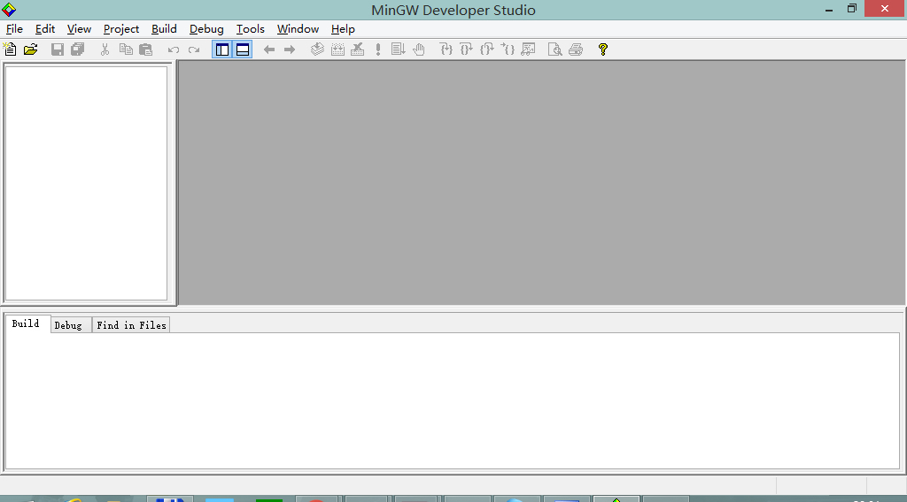
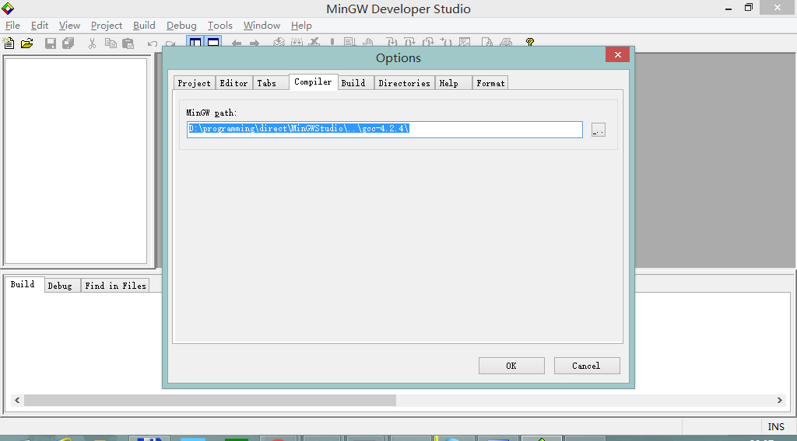
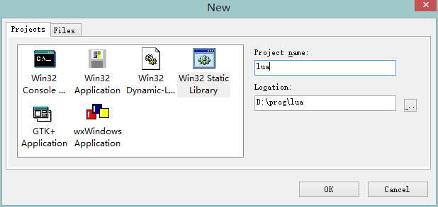
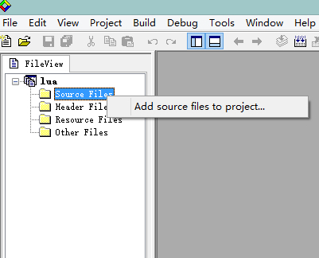
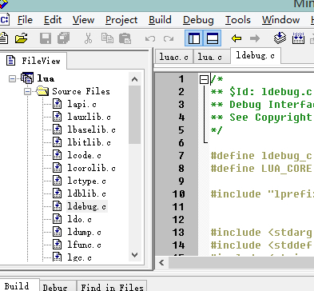
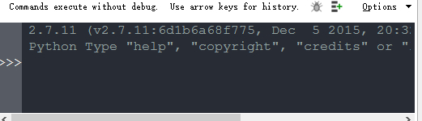

- 00 开篇词 跟我学，你也可以开发一款游戏！.md.html
- 复习课 带你梳理客户端开发的三个重点.md.html
- 第10讲 如何载入“飞机”和“敌人”？.md.html
- 第11讲 如何设置图像的前后遮挡？.md.html
- 第12讲 如何设置精灵的变形、放大和缩小？.md.html
- 第13讲 如何设置淡入淡出和碰撞检测？.md.html
- 第14讲 如何制作游戏资源包和保存机制？.md.html
- 第15讲 如何载入背景音乐和音效？.md.html
- 第16讲 如何在游戏中载入UI和菜单？.md.html
- 第17讲 如何用鼠标和键盘来操作游戏？.md.html
- 第18讲 如何判断客户端的网络连接？.md.html
- 第19讲 如何嵌入脚本语言？.md.html
- 第1讲 游戏开发需要了解哪些背景知识？.md.html
- 第20讲 脚本语言在游戏开发中有哪些应用？.md.html
- 第21讲 如何使用脚本语言编写周边工具？.md.html
- 第22讲 如何选择合适的开发语言？.md.html
- 第23讲 如何定制合适的开发协议？.md.html
- 第24讲 不可忽视的多线程及并发问题.md.html
- 第25讲 如何判断心跳包是否离线？.md.html
- 第26讲 如何用网关服务器进行负载均衡？.md.html
- 第27讲 如何制作游戏内容保存和缓存处理？.md.html
- 第28讲 热点剖析（一）：HTML5技术是如何取代Flash的？.md.html
- 第29讲 热点剖析（二）：如何选择一款HTML5引擎？.md.html
- 第2讲 2D游戏和3D游戏有什么区别？.md.html
- 第30讲 热点剖析（三）：试试看，你也可以编写一款HTML5小游戏！.md.html
- 第31讲 热点剖析（四）：安卓端和苹果端游戏开发有什么区别？.md.html
- 第32讲 热点剖析（五）：如何选择移动端的游戏引擎？.md.html
- 第33讲 热点剖析（六）：AR和人工智能在游戏领域有哪些应用？.md.html
- 第34讲 热点剖析（七）：谈谈微信小游戏的成功点.md.html
- 第35讲 热点剖析（八）：谈谈移动游戏的未来发展.md.html
- 第36讲 热点剖析（九）：谈谈独立开发者的未来发展.md.html
- 第3讲 游戏的发动机：游戏引擎.md.html
- 第4讲 底层绘图接口的妙用.md.html
- 第5讲 构建游戏场景的武器：地图编辑器.md.html
- 第6讲 从0开始整理开发流程.md.html
- 第7讲 如何建立一个Windows窗体？.md.html
- 第8讲 如何区分图形和图像？.md.html
- 第9讲 如何绘制游戏背景？.md.html
- 结束语 做游戏的过程就像是在雕琢一件艺术品.md.html
- 课后阅读 游戏开发工程师学习路径（上）.md.html
- 课后阅读 游戏开发工程师学习路径（下）.md.html
- 捐赠
第6讲 从0开始整理开发流程
在第一模块的基础知识中，我已经讲过开发一款游戏需要的一些背景知识。对于2D游戏和3D游戏的区别、从程序到美术、从2D、伪3D到3D等方面，我都进行了逐一地阐述。除此之外，对于任何类型的游戏开发都非常重要的三个概念：游戏引擎、底层绘图接口、地图编辑器，我也进行了一些我个人的解读。
有了这些背景知识，这一节，我来带你整理一下整个游戏开发流程以及流程中所需要的工具。
1.选择开发环境
我们默认是在Windows环境下进行开发，至于是什么版本的Windows不需要做更多地阐述，你愿意用什么版本就用什么版本，因为几乎所有流行的Windows环境都能进行编程工作。至于我为什么选择Windows环境进行开发，那是因为：
首先，在Windows环境下，拥有比较方便的调试工具。不管是Python脚本语言还是C/C++语言，都可以使用图形界面进行调试；
其次，Windows下的IDE开发环境也比其他平台更多，你拥有更多的工具可供选择。另外，在开发游戏的时候，你可以选择OpenGL、DirectX或者SDL等图形库进行编程。作为游戏开发，DirectX几乎是不可或缺的标准，而我在第四节讲述底层绘图接口的时候说过，它是由微软提供的游戏编程接口，在Windows下提供了更为方便的底层调用。
除了Windows外，Linux平台的图形显卡驱动几乎是不完善的，无法发挥显卡的最大优势。苹果平台又一家独大，开发人员只能为其定制专一的代码，开发难度比之Windows就大了不少。
2.下载脚本工具
在开发过程中，我们需要用到Python、Lua或者Ruby等脚本工具。我们可以直接用Python或者Ruby开发简单的游戏模块的Demo。由于脚本语言代码的简单和高可读性，所以由脚本语言入手，进行早期示例的代码剖析，是一个不错的选择。
Python我们可以从python.org下载，Lua我们可以从lua.org下载，相应地，Ruby也可以在ruby-lang.org下载。为了考虑兼容性，Python建议使用2.7.x版本。Lua下载最新的版本即可。Windows下Python的源代码编译并不方便，所以建议下载MSI安装包，直接安装即可。因为之后我要使用Pygame进行示范，所以建议你使用32位的Python版本。
3.选择编程语言版本
在开发的过程中，一定会用到C/C++语言。
如果你要使用VC++的话，会涉及购买、安装和配置等情况。为了使这个专栏的内容尽量简洁、可用，我建议使用Windows下，移植版本的GCC和G++进行编译（也就是MinGW移植版），GCC版本为4.2.x或者以上版本。有人说这些版本太老了，我认为，初学阶段，版本越新，意味着你需要知道的编译器内容和编译器开关就越多，因此建议你选择较为稳定的4.2.x或以上版本。
对于C++而言，我们也不需要用到最新的C++标准，比如C++11等。对于C语言，我们默认使用C89或者C99都是可以的。简洁、高效、显而易见，是我一向遵从的原则。
4.下载编译器
关于C/C++，你可以去MinGW官网下载4.2.x版本。当然如果你希望使用其他更新的版本也不是不行，你可以直接下载安装器，来获取编译器的版本。下载地址是这个：https://sourceforge.net/projects/mingw/files/Installer/
你也可以按照你的需求定制下载。如果要成为完整的编译器，必须下载这些内容：
MinGW (C/C++) Compiler
Binutils
Windows32 API
MinGW Runtime Libraries
GNU Debugger (GDB)
GNU Make
一般来讲，使用安装器下载的编译器都是最新版本的，如果你需要下载特定的版本号，你可以在这个网址 https://sourceforge.net/projects/mingw/files 下，找到相应的编译工具目录和对应的版本号。
这样，C/C++编译器就下载完成了。如果你是自己下载特定版本号的话，需要将所有包解压缩在一个指定的目录下，解压缩出来的目录结构一般有这几个常用子目录：bin、include、lib、share、 local、etc、var。
5.选择C/C++和Python的IDE
接下来，我们需要一套IDE来帮助我们进行C/C++和Python的开发。
C/C++方面，我选择使用免费的MinGW Studio来完成。MinGW Studio的界面绝大部分模仿了经典的VC6的IDE界面。虽然相对于更时髦的收费编译器来说，MinGW Studio没有特别智能的代码提示，但是可以方便我们完成程序的调试。
我们可以通过搜索引擎搜索到并且顺利地下载MinGW Studio。有一些IDE是自带C/C++编译器的，这种包也没有问题。如果你对C/C++这部分设置比较熟悉，你也可以自由选择其他IDE，比如DevCpp、CodeLite、CodeBlocks等等。
至于Python方面，我们可以使用Wing IDE。这是一个付费项目。也可以使用国内程序员编写的Ulipad，另一个付费软件Komodo，用来做Python、Ruby的IDE都很合适。至于Wing IDE，我们可以在wingware.com下载最新版本。
6.带你一起测试编译器的运作
首先，我们需要先测试编译器是否运作顺利，所以我选择Lua来进行编译。在将来，需要使用Lua的时候，必须将之编译为静态库或者可执行文件。
我们打开MinGW Studio，界面是这样的：

我们可以在Edit->Options->Compiler选项里设置具体的编译器路径，以便让IDE找到编译器来开始工作。

一般编译器的路径都会自带bin目录，所以设置的目录必须在bin目录的上级目录。比如我们设置的MinGW编译器路径为C:\MinGW，那么bin目录就是C:\MinGW\bin，所以在IDE的设置下，只需要设置为C:\MinGW就可以了。
我们将下载到的Lua5.x.x.tar.gz解压缩到某个目录。在我写文章的时候，Lua的最新版本是5.3.4。在这个目录下，并没有我们所需要的MinGW Studio的项目文件，所以我们需要手工建立一个。我们在File->New->Projects选项下，建立一个Win32 Static Library，也就是Windows静态库，将名字设为lua。

然后我们将文件添加到项目里面，在项目虚拟目录里面，点击鼠标右键。

在弹出的选择文件对话框里，选中刚才解压缩出来的Lua目录，选择src目录下的所有或椎为.c的文件，随后，我们将 lua.c 排除在外（选中，右键，选择移除出项目）。因为我们制作静态库的时候，可以不用这个文件。

我们可以点击Build->Build选项来进行编译，编译完成后，如果编译成功的话，我们会在Debug目录下看到一个.a文件。如果你的项目名叫lua，那么制作出来的静态库就是liblua.a，所以个文件就是我们以后要用到Lua静态库。
如果你有一定的编程经验的话，可能已经看到，我们现在编译出来的是Debug，是调试版本，我们暂且不去管它。这个在后面我们会进行详细地探讨，目前我们只需要知道这一系列的使用方式和方法就可以了。
我们已经将Lua编译完毕了，后续的文章中我会教你使用Lua静态库。
接下来，我们尝试使用Python语言。你可以使用任何一个上述推荐的专业IDE来编写Python代码。实际上，Python的IDE不需要过多的配置。因为安装在Windows机器上后，Python的路径会被注册到系统。通常IDE会自动找到Python执行文件，并且，IDE的Shell窗口将会正确地找到Python并看到其互动窗口，就像这张图的内容：

现在，我们尝试在IDE中编写一小段Python测试代码，然后跑一下。程序运行结果就是打印一个 test字符串。
import os, sys
if __name__ == '__main__':
print 'test'
最后，将该文件保存后缀为.py的文件，这就是Python源代码。
7.专为Python开发的游戏库Pygame
在这里，为你介绍一个专门为Python开发的游戏库Pygame。至于为什么选择Pygame，我在第四节讲底层绘图接口的时候已经解释了一些。这里再说一下。
Pygame包装了SDL的实现。在编写2D游戏方面，它的表现可以用三个词来形容：成熟，稳定，简单。它把一些细枝末节隐藏在了Python语法背后，当然也有Ruby语言封装的RubyGame，但是很多人对于这种魔幻的语言并不是特别了解，所以选择简洁的Python语法+SDL库封装是最合适的选择。
今后我们会编写游戏的示例Demo，一些轻量级的、游戏的某一部分的说明和介绍，我会使用Pygame进行简单的阐述。Windows版本我们点击这个网址下载这个版本的源代码。 http://www.pygame.org/ftp/pygame-1.9.1release.zip 如果你不愿意下载源代码，也可以根据自己对应的Python版本号下载对应的二进制包，支持Python 2.4 到3.2的版本。
pygame-1.9.1.win32-py2.7.msi 3.1MB
pygame-1.9.1release.win32-py2.4.exe 3MB
pygame-1.9.1release.win32-py2.5.exe 3MB
pygame-1.9.1.win32-py2.5.msi 3MB
pygame-1.9.1.win32-py2.6.msi 3MB
pygame-1.9.2a0.win32-py2.7.msi 6.4MB
pygame-1.9.1.win32-py3.1.msi 3MB
pygame-1.9.2a0.win32-py3.2.msi 6.4MB
如果你安装的是64位Windows和64位Python，注意Pygame版本和Python都需要是32位的，才能完美兼容和使用。
小结
好了，这节内容差不多了。我来总结一下。在这一节中：
我先从各操作系统下的调试工具、IDE开发环境、显卡驱动等三个方面，分析了为什么选择在Windows环境下进行开发；
然后，我还带你梳理了一遍开发所需要的语言和工具，并且提供了下载的网址和安装的方法；
之后，我还带你测试了Lua脚本语言在编译器中的编译并且生成了静态库文件。
最后给你介绍了Pygame，今后将会用到这个Python下的2D游戏开发引擎。
最后，给你留一个思考题吧。
你可以结合之前几节的内容，思考一下，Pygame绑定SDL绘图接口是如何实现的？
欢迎留言说出你的看法，我在下一节的挑战中等你！
© 2019 - 2023 Liangliang Lee. Powered by gin and hexo-theme-book.